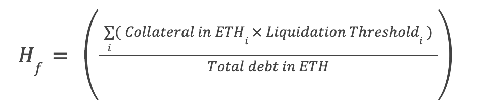

Introduction
Stablecoins have always been an area of very intensive research and interest in decentralised finance. Most stablecoins in the ecosystem can be categorised into custodian, soft-pegged over-collateralized and under-collateralized algorithmic designs.
Custodian stablecoins are centralised institutions that allow deposits in fiat and other RWAs and issue tokens on the blockchain that are hard-pegged to the exact value of the currency. Hence a very centralised approach. Soft-pegged over-collateralized stablecoins have different designs, the most popular amongst them are CDPs(Collateralized Debt Positions).
Depositors deposit an asset to issue a stable position at a premium. These positions get liquidated when the value of the collateral gets lower than the loan issued and depositors need to add more margin to prevent the same. This is a permissionless and decentralised approach and the requirement of a premium to issue stablecoin makes it hard to scale.
Under-collateralized algorithmic stablecoins are backed by endogenous assets and provide a highly trustless and scalable model that captures the early Bitcoin vision of decentralized money but with useful stability. They're extremely difficult to bootstrap and highly risky, as seen in the LUNA-UST crash.
We've come up with a novel mechanism of cross/isolated Vaults which allow depositors to hedge risks with multiple assets and allows integration of risk management strategies on top of the protocol without much gas overhead. Lucidly relies on a protocol managed stability pool as the primary mechanism to liquidate risky Vaults.
uLCD
Lucidly Finance is an overcollateralised stablecoin lending protocol designed to offer efficient borrow rates and a robust dynamic interest rate to maintain peg. The first product is uLCD which is soft-pegged to USD.
The protocol uses governance to vote on gauges to use the collateral to earn yield on other defi money markets like yearn vaults, morpho aave, gearbox etc.
Vaults
The Lucidly Protocol uses chainlink oracles and Euler's isolated lending markets to allow users to adjust their risk tolerance according to the collateral they decide to use.
Users can deposit multiple collateral into their vaults and borrow a maximum amount of uLCD tokens calculated from their health factor.
Cross-margin enables users to hedge risks according to total notional value in the margin account.
A Vault is where the borrower takes out and maintains the $uLCD loan against multiple assets on the protocol. Every vault is linked to an individual ERC20 address and each address can have just one vault.
Lucidly Vaults are conceptually similar to the vaults or CDPs managed by other protocols. Each vault maintains two balances: One balance is the user debt denominated in ETH and the other balance is the net value of the users collateral equivalent to the total margin of all the assets (ETH, wStETH, APE, LINK, AVAX, etc.) supplied by the user, also denominated in ETH.
The vault’s collateral ratio is dependent on the above two balances of the vault. The amount of each balance could be altered by adding more collateral or by repaying the user debt. The vault could be closed anytime by paying off the complete debt + interest.
Borrowing and Risk Parameters
Lucidly Finance offers dynamic interest rate loans aiming to be the most capital-efficient borrowing protocol. A user who needs liquid funds can use the protocol to lock up multiple assets listed on the protocol to borrow against the collateral and withdraw uLCD, which could be repaid at any future date.
Users can deposit multiple assets and borrow a certain amount of uLCD tokens. Each collateral has a certain LTV ratio (loan-to-value).
Each Vault has a single owner(can be an EOA or a contract) and a health factor that determines how much risk the owner assumes.

Any position that is under water and is eligible for liquidation if the health factor reached the liquidation threshold.
Cross collateral allows users to diversify their risk across multiple assets. At launch, the protocol is going to support the following assets as collateral:
Collateral Assets
Assets are permissioned to be used as collateral by the governance and are priced using Chainlink oracles and Euler Finance isolated lending markets for select assets.
Every collateral asset to be whitelisted by the protocol has a few quantitative parameters which are analyzed for risk :
- Market Cap / Fully Diluted Market Cap
- Trading Volume
- Liquidity
- Cost needed to manipulate a 30 minute TWAP
Extensive analysis is to be performed by the core team before governance takes over regarding any asset whitelisting.
Interest Rates and Price Stability
Lucidly has a novel reactive interest rate mechanism that enforces peg stability by adjusting interest rates algorithmically, involving minimal governance in the process.
When uLCD is below the peg(i.e, the demand for uLCD is less as a result of too much supply), the interest rate increases, hence prompting Vault owners to repay their loan back. This increases demand for uLCD in the open market and hence will bring price up to 1 USD.
When uLCD is above peg(i.e, there is more demand for uLCD than supply), the interest rates decrease, hence incentivizing users to borrow more uLCD against their margin. This increases supply and hence will bring price down to 1 USD.
Theoretically, interest cost should tend towards infinity if the price of uLCD tends towards zero and vice versa. Interest rates should reflect market supply and demand. An Asset should cost more to borrow if there's more demand for it than supply and less for the opposite.
The interest rate is to be controlled programmatically by a PI controller and the aim is to achieve the following goals in mind:
-
Optimal operation - The system must stay at an equilibrium state where the market price of 1 uLCD is 1 USD while holding the interest rate relatively constant.
-
Attractive interest rate for borrowers - We want the interest rate to quickly react when the price deviates from 1 USD.
Lucidly Finance uses a PI controller to determine rates. The interest rate for a loan at any point of time consists on a proportional and integral factor.
Derivation for the interest rate
At any point of time, the ideal price of 1 uLCD should be 1 USD.
The peg deviation \( \Delta P \) at any point of time can be denoted by:
$$\Delta P = P_t - P_o$$
where \(P_o\) is 1 USD and \(P_t\) is the market price of 1 uLCD.
The controller is composed of the integral (\(r_I\)) and proportional (\(r_P\)) parts \(r_L\):
$$r = r_I + r_P$$
Integral term
We need a controller that has adaptive behaviour. It should search for the interest rate that corresponds to the optimal price: when price is above peg, it should grow, otherwise it should go down. This is formulated below:
$$r_i(t) = k_i\int_0^t\Delta P~d\tau$$
where \(k_I\) > 0 is a constant. The discrete form on the above equation is $$r_I(t + \Delta t) = r_I(t) + k_I(\Delta P)\Delta t$$
Proportional term
The proportional term \(r_P\) captures the following behaviour: when peg deviates below 1 USD, sharply increase the interest rate; when peg deviates below 1 USD, drop the interest rate. It is expressed by the formula
$$r_P(t) = k_P \Delta P$$
where \(k_P\) is a positive constant.
This approach is risky in a way that is \(k_P\) is not large enough, it may not succeed in pushing the peg back to 1 USD in case of price volatility. We need to assume a tolerable critical price on either side of the deviation beyond which \(r_P\) has more effect on the interest rate.
Let's assume we can tolerate the price of 1 uLCD between $0.98 and $1.02, these two prices are our critical prices.
Therefore, we need to make \(r_P\) adaptive in the following way:
$$r_P(t) = k_c\Delta P$$ $$r_P(t) = k_c(1+T_c(t))\Delta P, if |\Delta P| > 0.02$$
Here \(T_c\) is a positive factor that grows while the peg stays above $1.02 or below $0.98 and decreses otherwise:
$$T_c(t+\Delta t) = \{T_c(t) + \beta \Delta t\}$$
Liquidations and Stability Pool
Lucidly’s liquidation model provides relevant benefits from a user’s perspective with its design exploring relevant solutions.
One of the main issues for borrowing services is the fact that the protocol must always remains solvent: there are therefore, if necessary, liquidations to restore the balance. Liquidation of positions requires a certain infrastructure when it is the liquidators who do it directly, as on Maker, Compound or Aave. To optimize the process, the idea of having a liquidity “backstop” has emerged.
It is about having a reserve of funds, generally stablecoins that the protocol uses if necessary to manage liquidations: at Lucidly Finance, we call it the Stability Pool inspired from Liquity. The users who wish to do so can deposit their uLCD in this pool: they are remunerated in the asset that the protocol liquidates. Lucidly Finance will deploy a stability pool for each collateral that it supports.
The funds in the stability pool are used when necessary for liquidations. With quantified figures, the protocol runs the stability pool in a fully secure manner. Liquidations tend to happen mostly in case of a sharp drop in the total margin price of the assets stored in the vault. A position in the Stability Pool therefore allows one to profit from these juicy liquidations without having the skills or infrastructure to execute them.
The stability pool thus offers a rather gas-efficient and attractive native return option on uLCD. With a conservative collateral ratio, it may even be suitable for an almost entirely passive position. Rewards from the stability pool is distributed to depositors in a O(1) complexity.
The stability pool acts as the first shock absorber for liquidations in the protocol. However, if certain cases, if the debt amount cannot be covered by stability pool reserves, the protocol will put up the collateral up for a dutch auction.
The collateral in that case is sold off to the highest bidder and protocol takes a certain amount of the collateral in this case as a liquidation fee. This amount is dynamic, rather than a fixed discount percentage for the liquidator, we allow the discount to rise as a function of how under-water a position is. As the discount slowly increases, each would-be liquidator must decide whether or not to bid for a liquidation at the current discount on offer. Liquidator A might be profitable at 4%, but liquidator B might run a more efficient operation and be able to jump in sooner at 3.5%. The Dutch auction is aided by Uniswap TWAP oracles because a shock to the price does not bring with it a singular point at which every liquidator becomes profitable all at once. Instead, the price moves more smoothly over time leading to a continuum of opportunities to liquidate, which further helps to limit PGAs. Overall, this process should help to drive the discount price towards the marginal operating cost of liquidating a borrower.
Gauges and Defi Market Operations
DeFi Market Operations or DeMOs are operations that are voted upon by the users of the protocol as to where the collateral should be deposited to earn passive yield.
For example, the protocol as ETH as collateral. There are multiple passive earning strategies for WETH, i.e., yearn vaults, gearbox passive pools, instadapp lite vaults, morpho aave and much more.
Gauges are used to incentivize particular "strategies" and behaviors that are advantageous to the protocol such as increasing uLCD lending, deepening liquidity of certain pairs, or growing a partnership/integration between another project.
Listing of gauges will be permissioned by governance and must suffice two properties :
- Immediate withdrawal - as vaults could be closed anytime through users or liquidation.
- High smart contract security - only highly proven staking opportunities can be utilized.
bLCD(bonded LUCID) allocated to each gauge is referred to as it's "gauge weight". Voters can distribute their voting power across multiple gauges or just one gauge.
- Users issue loans from the protocol and receive emissions.
- They vote with LUCID on gauges for the collateral to make money.
- Part of the yield is used to buy back and burn the LUCID token from open market.
Governance
Lucidly finance is focused on building a decentralised protocol with a novel governance mechanism to provide efficient decision-making for the stakeholders of Lucidly Finance.
LUCID
LUCID will be the core token of the protocol, handling all the proposals at governance level(LIPs).
Although most of the protocol activites require minimal governance, these are the areas that will fall under governance:
- Whitelisting of assets for collateral
- Updating interest fee constants
- Whitelisting of gauges
Holders of LUCID buy bonds in a olympusdao mechanism. We'll be using Bond Protocol to facilitate protocol owned liquidity.
Bonded LUCID or bLUCID is used to vote on gauges and protocol governance.